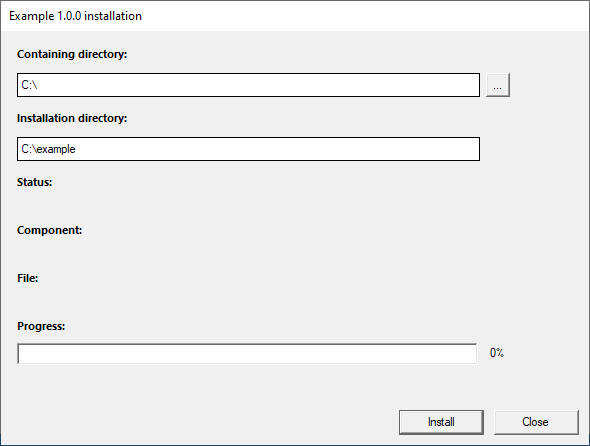
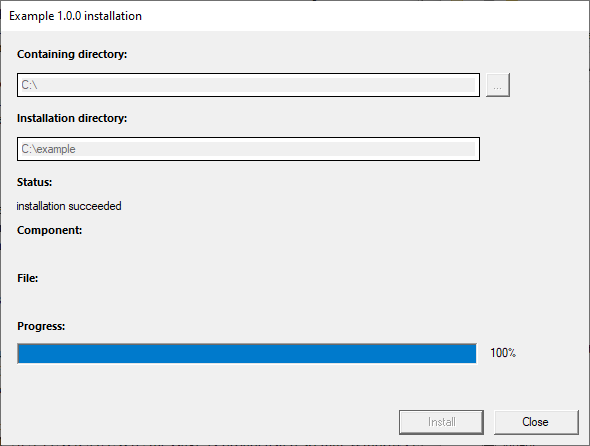
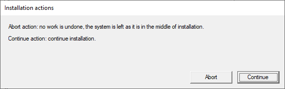
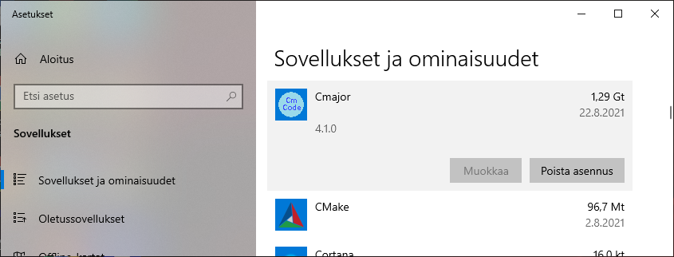
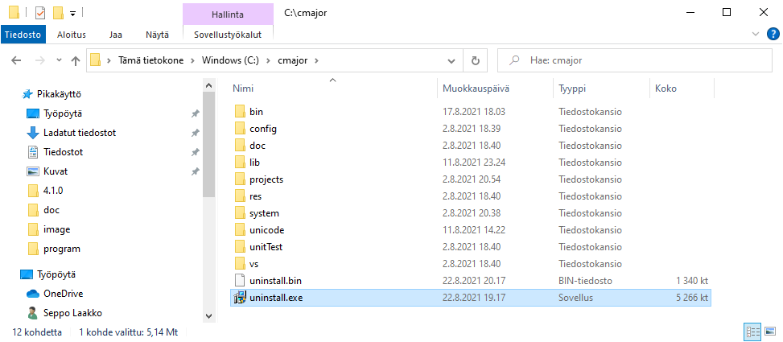
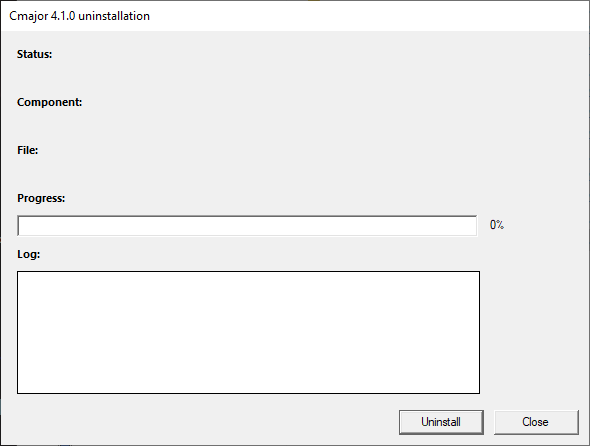
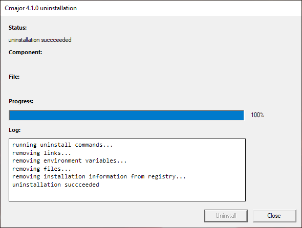
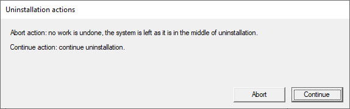

Wingstall
Table of contents
1 Introduction
Wingstall is an installer generator tool for Windows x64 written in C++.
It generates a Visual C++ 2022 setup program that contains a binary installation package embedded
inside the setup executable as a Windows resource.
The binary installation package is generated by Wingstall from an XML package description file
created using a graphical package editor, or written manually by the package author.
The binary package may be uncompressed, or compressed using the ZLib library.
Wingstall includes all required libraries except Boost libraries.
2 Requirements
2.1 Requirements for the Computer of the Package Author
- Windows 10 64-bit Operating System
- Microsoft Visual Studio 2022 Community Edition with 'Desktop development with C++' workload installed
- Boost C++ Libraries installed.
If you need help building and installing Boost, take a look at
this
guide for example.
- Wingstall tools installed
2.2 Requirements for the Computer to which a Package is to be Deployed
3 Configuration
3.1 Option 1: Configuring using Package Editor
- Start the package editor.
- Configuring using package editor is described here.
3.2 Option 2: Configuring manually
3.2.1 Wingstall Configuration
- Open Windows Control Panel | System | Advanced system settings | Environment Variables and add a WINGSTALL_ROOT environment variable
that contains a path to your wingstall directory (for example: 'C:\wingstall').
The WINGSTALL_ROOT environment variable is used by the tools to locate the Unicode database and configuration.
- Add the '%WINGSTALL_ROOT%\bin' directory to your PATH.
- Open %WINGSTALL_ROOT%/config/configuration.xml1 with a text editor (e.g. with notepad or Notepad++).
- The default Boost include directory is 'C:\boost\include\boost-1_74'.
Change the value of the boostIncludeDir attribute to contain path to your Boost include directory.
- The default Boost library directory is 'C:\boost\lib'.
Change the value of the boostLibDir attribute to contain path to your Boost library directory.
- The configured directory paths will be inserted to Visual C++ project files generated by Wingstall.
3.2.2 Visual Studio Configuration
- Open %WINGSTALL_ROOT%/config/build.props1 with Visual Studio or a text editor (e.g. with notepad or Notepad++).
- Change the '<BOOST_INCLUDE_DIR>C:\boost\include\boost-1_74</BOOST_INCLUDE_DIR>' element to contain path to your Boost include directory.
- Change the '<BOOST_LIB_DIR>C:\boost\lib</BOOST_LIB_DIR>' element to contain path to your Boost library directory.
- The configured directory paths are in effect when building the 'wingstall.sln' solution with Visual Studio.
3.3 Unicode Database
If the files %WINGSTALL_ROOT%/unicode/wingstall_ucd.bin and/or %WINGSTALL_ROOT%/unicode/wingstall_ucd.deflate.bin are missing,
you can generate them with the make_wingstall_ucd tool:
- If you don't have binaries in your %WINGSTALL_ROOT%/bin1 directory,
you must first build the tools from sources.
- Here are instructions how to generate the Unicode database with the make_wingstall_ucd tool.
4 Creating an Installer
4.1 Creating an Installer using Package Editor
Creating an installer using package editor is described in this document.
4.2 Creating an Installer manually
Creating an installer for an application manually requires these steps:
- creating a package XML file with Visual Studio or a UTF-8-enabled text editor such as Notepad++.
- running wingstall -v --create-package package.xml
- running wingstall -v --make-setup package.bin
- compiling the generated setup.vcxproj with Visual Studio
4.3 Installer User Interface
The resulting installer will look like this:

- The 'Containing directory' is the directory that will contain the installation directory.
It can be changed by clicking the '...' button on the right, or by typing a new value to the text box.
-
The 'Installation directory' is the directory that will be created by the installer and will contain
all directories and files in the package.
-
The 'Status' shows current installation status.
-
The 'Component' shows current component being installed.
-
The 'File' shows current file being read from the package and written to user's file system.
-
'Progress' shows installation progress.
4.4 Debugging the Installer
The generated installer application requires Administrator privileges because it writes to Windows registry under the HKEY_LOCAL_MACHINE key.
Therefore if you want to debug the setup application, you must first start Visual Studio with administrator privileges:
right-click the Visual Studio icon in the task bar, right-click the Visual Studio 2022 on the opened menu and select 'Run as Administrator' from the opened menu.
Then you can open the setup.vcxproj and start debugging it.
5 Package XML Syntax
The package XML file will contain:
- general information about the application to be installed
- information about what will be included in the binary package (package.bin file)
- information about the environment variables and shortcuts to be created when the package is installed to the target computer
When the package XML is compiled with wingstall --create-package command, the resulting package.bin will contain:
- knowledge of the compression method used (none, deflate, bzip2)
- compressed metadata about files, directories, environment variables and links; this is called the package index
- compressed contents of files; this is called the package data
5.1 Package Element
The package element is the root element of the package XML file.
It has name and other attributes some of which are mandatory and some not.
The package element may contain one or more component elements,
and optional (zero or one) environment, links, preinstall and uninstall elements.
Syntax
<package name="package_name" package_attributes>
package_content
</package>
Cardinality
1
Parent
-
Children
component | environment | links | preinstall | uninstall
Example
<?xml version="1.0" encoding="utf-8"?>
<package
name="example"
appName="Example"
version="1.0.0"
publisher="Joe Coder"
sourceRootDir="../../source"
targetRootDir="C:/example"
compression="deflate"
iconFilePath="$TARGET_ROOT_DIR$/bin/example.ico"
includeUninstaller="true">
...
</package>
Package Attributes
| name |
description |
mandatory |
default value |
| name |
the name of the package |
true |
|
| appName |
the name of the application |
true |
|
| version |
application version (major.minor[.build]) |
false |
1.0.0 |
| publisher |
the publisher of the application |
false |
|
| sourceRootDir |
path to the top level directory that contains directories and files included in the package;
if this is a relative path, it is taken relative to the directory that contains the package XML file |
true |
|
| targetRootDir |
absolute path to the installation directory in the target file system
(can be changed by the user at installation time) |
true |
|
| compression |
compression method: none - no compression,
deflate - compression using the zlib library,
bzip2 - compression using the bzip2 library |
false |
none |
| iconFilePath |
path to the application icon file (.ico) in the target file system;
you can use engine variables as path components |
false |
|
| includeUninstaller |
true - include uninstaller program in the package and
install it to the targetRootDir directory;
false - do not include uninstaller program |
false |
true |
| id |
the product ID of the application; the value should be an UUID without braces |
false |
random UUID, e.g. 00d25835‑6305‑4380‑bba4‑87d6f80e12df |
5.2 Component Element
The contents of the package is organized as components. Each component may contain one or more directories and one or more files.
The name of the component combined with the full path of a current directory is shown in the component label
of the installer window when the package is being installed.
Syntax
<component name="component_name"
component_content
</component>
Cardinality
0-n
Parent
package
Children
directory | file
Example
<component
name="binaries">
...
</component>
The package will contain a binaries component.
Component Attributes
| name |
description |
mandatory |
default value |
| name |
the name of the component |
true |
|
5.3 Directory Element
A directory element has a name attribute
that should correspond to a physical directory with the same name in the source file system.
A physical path of a directory element contained by a component element
consists of the value of the sourceRootDir attribute of the
package element combined with the name attribute of the directory element.
A physical path of a directory element contained by another directory element is the physical path
of the parent directory element combined with the name attribute of that child directory element.
By default all subdirectories and files contained by a directory are included in the package.
Finer control of what will and will not be included can be specified using the
include and exclude elements.
Syntax
<directory name="directory_name"
directory_content
</directory>
Cardinality
0-n
Parent
component | directory
Children
directory | include | exclude
Example
<component
name="binaries">
<directory name="bin"/>
</component>
The binaries component consists of all directories and files contained by the bin directory.
Directory Attributes
| name |
description |
mandatory |
default value |
| name |
the name of the directory |
true |
|
5.4 File Element
A file element has a name attribute
that should correspond to a physical file with the same name in the sourceRootDir directory.
The name can also be a pattern that is matched against file names in the sourceRootDir directory.
Syntax
<file name="file_name"/>
Cardinality
0-n
Parent
component
Example
<component
name="root">
<file name="wingstall.sln"/>
</component>
The root component consists of a wingstall.sln file.
File Attributes
| name |
description |
mandatory |
default value |
| name |
the name of the file; can be a pattern; pattern '*' means 'all'; pattern '*.txt' matches all file names ending with '.txt' |
true |
|
5.5 Include and Exclude Elements
The include and exclude elements provide a mechanism to selectively include and exclude files and directories.
The names of the files and directories directly contained by a physical source directory are matched against
the include and exclude child elements contained by a corresponding directory or include element.
The list of direct include and exclude child elements are processed sequentially. By default each file is included.
Then, if the file name matches an <exclude file="pattern"/> element, it will be excluded.
But if it later in the same list matches an <include file="pattern"/> element, it will be included, however.
The last matching include file or exclude file element will stay in effect.
The same goes for subdirectory names: by default each subdirectory is included.
Then, if the subdirectory name matches an <exclude dir="pattern"/> element, it will be excluded.
But if it later in the same list matches an <include dir="pattern"/> element, it will be included, however.
The last matching include dir or exclude dir element will stay in effect.
This means that if you want to selectively include files, you should first have an <exclude file="*"/> element, and then have
<include file="file_name"/> element for each file to include.
Again the same goes for selectively including subdirectories: you should first have an <exclude dir="*"/> element, and then have
<include dir="dir_name"/> element for each subdirectory to include.
If you want only to selectively exclude files, you should have <exclude file="pattern"/> element(s) matching those files,
and if you want only to selectively exclude subdirectories, you should have <exclude dir="pattern"/> element(s) matching those subdirectories.
The exclude elements can have an additional attribute named cascade that should have a Boolean value.
If cascade="true", the name/pattern is applied also in the subdirectories and descendant directories recursively.
Note: package.index.xml file generated by the wingstall --create-package command
lists all directories and files included in the package.
Syntax
<include file="file_name"/>
<exclude file="file_name" [cascade="true" | cascade="false"]/>
<include dir="dir_name"/>
<exclude dir="dir_name" [cascade="true" | cascade="false"]/>
Cardinality
0-n
Parent
directory | include
Children (include)
include | exclude
Examples
Example 1
<component name="libraries">
<directory name="lib">
<exclude dir="*"/>
<exclude file="*"/>
<include file="*.lib"/>
</directory>
</component>
Include "*.lib" files contained directly by the "lib" directory. Exclude all other files and exlude all subdirectories under the "lib" directory.
Example 2
<component name="system">
<directory name="system">
<exclude dir="*"/>
<include dir="lib">
<exclude dir="cpp"/>
</include>
</directory>
</component>
Include all files contained directly by the "system" directory.
Include only the "system/lib" subdirectory and all files and directories contained by the "system/lib" directory excluding the "system/lib/cpp" directory.
Example 3
<component name="sources">
<directory name="src">
<exclude dir="x64" cascade="true"/>
<exclude dir="Debug" cascade="true"/>
<exclude dir="Release" cascade="true"/>
</directory>
</component>
Include all files and directories recursively under the "src" directory except directories that have name "x64", "Debug" or "Release".
Include and Exclude Attributes
| name |
description |
mandatory |
default value |
| file | dir |
the name of the file or subdirectory to include or exclude; can be a pattern;
pattern '*' means 'all', pattern '*.exe' matches all names ending with '.exe';
note: the name or pattern may not contain forward slash '/' or backslash '\' characters |
true |
|
| cascade |
for exclude elements: if cascade=true, the name/pattern is applied also in the subdirectories and descendant directories recursively |
false |
false |
5.6 Environment Element
The environment element is an optional element that may contain environment variables and path directories.
Syntax
<environment>
environment_content
</environment>
Cardinality
0-1
Parent
package
Children
variable | pathDirectory
Example
<environment>
...
</environment>
5.7 Environment Variable Element
An environment variable has a name and a value. The value of the environment variable may have engine variables as
path components. The value is expanded at installation time.
The environment variable is created as a system variable for all users.
Syntax
<variable
name="environment_variable_name"
value="environment_variable_value"/>
Cardinality
0-n
Parent
environment
Example
<environment>
<variable name="EXAMPLE_ROOT" value="$TARGET_ROOT_DIR$"/>
</environment>
Creates an environment variable whose name is 'EXAMPLE_ROOT', and whose value is path to the installation directory, to the target computer.
Environment Variable Attributes
| name |
description |
mandatory |
default value |
| name |
the name of an environment variable to create to the target computer |
true |
|
| value |
the value of the environment variable; you can use engine variables as path components |
true |
|
5.8 Environment Path Directory Element
A pathDirectory element has a value attribute.
The value may contain engine variables as path components that are expanded at installation time.
The value of the path directory is appended to the system PATH environment variable for all users.
Syntax
<pathDirectory
value="path_directory_value"/>
Cardinality
0-n
Parent
environment
Example
<environment>
<pathDirectory value="$TARGET_ROOT_DIR$/bin"/>
</environment>
Appends path to the bin subdirectory of the installation directory to the system PATH.
Environment Path Directory Attributes
| name |
description |
mandatory |
default value |
| value |
the value should be an absolute directory path to be appended to the PATH environment variable in the target computer;
you can use engine variables as path components |
true |
|
5.9 Links Element
The links element is an optional element that may contain link directories and link files.
Syntax
<links>
links_content
</links>
Cardinality
0-1
Parent
package
Children
linkDirectory | link
Example
<links>
...
</links>
5.10 Link Directory Element
The linkDirectory element has a path attribute.
The path may contain engine variables as components that are expanded at installation time.
The installation engine creates this directory to the target file system if it does not already exist.
Syntax
<linkDirectory
path="link_directory_path"/>
Cardinality
0-n
Parent
links
Example
<linkDirectory
path="$START_MENU_PROGRAMS_FOLDER$/Example"/>
Creates an 'Example' subdirectory under the 'Programs' folder of the Start menu.
Link Directory Attributes
| name |
description |
mandatory |
default value |
| path |
the value should be an absolute directory path to be created in the target computer;
you can use engine variables as path components |
true |
|
5.11 Link Element
The link element represents a shortcut file (.lnk) to be created to the target computer.
It has many attributes some of which are mandatory and some not.
The values of those attributes are expanded at installation time.
Syntax
<link
link_attributes/>
Cardinality
0-n
Parent
links
Example
<link
linkFilePath="$DESKTOP_FOLDER$/Example.lnk"
path="$TARGET_ROOT_DIR$/bin/hello.exe"
workingDirectory="$TARGET_ROOT_DIR$/bin"
description="Hello World Example"
iconPath="$TARGET_ROOT_DIR$/bin/hello.exe"
iconIndex="0"/>
Creates a shortcut named 'Example' to the user's desktop.
The shortcut points to the 'hello.exe' that is located in the 'bin' subdirectory of the installation directory.
Link Attributes
You can use engine variables as path components in the link attribute values.
| name |
description |
mandatory |
default value |
| linkFilePath |
the value should be an absolute shortcut (.lnk) file path to be created in the target file system |
true |
|
| path |
the value should be an absolute path to a file or directory in the target file system that the shortcut points to |
true |
|
| arguments |
if the shortcut is a link to an executable, this specifies command line arguments that the executable is given when executed |
false |
|
| workingDirectory |
if the shortcut is a link to an executable, this is the working directory that the executable is given when executed |
false |
the parent directory of path |
| description |
the description of the shortcut; shown when the user hovers the mouse cursor on the shortcut or shows properties of the shortcut |
false |
|
| iconPath |
path to a file that is an icon file (.ico) or contains (.exe or .dll) an icon for the shortcut |
false |
|
| iconIndex |
index of the icon to show |
false |
0 |
5.12 Preinstall Element
The preinstall element is an optional element that may contain include and run elements.
The preinstall component is associated with a directory that is created under the installation directory.
It is called the preinstall directory.
It has a unique random name, and its absolute path is exposed as the $PREINSTALL_DIR$ engine variable.
The preinstall component can be used for checking installation prerequisites before the main installation is started.
After the executables specified as include elements has been copied to the preinstall directory and then commands specified as run
elements have been executed, the preinstall directory is removed.
Syntax
<preinstall>
preinstall_content
</preinstall>
Cardinality
0-1
Parent
package
Children
include | run
Example
<preinstall>
...
</preinstall>
5.13 Preinstall Include Element
The include element that is the child of the preinstall element represents an executable file that is
included in the installation package and copied to the preinstall directory before the main installation is started.
It has a filePath attribute that should contain an absolute path to a file in the source file system.
The file can be an executable file (.exe or .dll), or a data file.
Note: if the included file is an executable (.exe) that depends on dynamic libraries (.dll), those libraries should be included too.
Syntax
<include
filePath="preinstall_include_file_path"/>
Cardinality
0-n
Parent
preinstall
Example
<preinstall>
<include filePath="C:\cmajorm\cmajor\installation\x64\Release\checkcmajor.exe"/>
</preinstall>
Include file 'C:\cmajorm\cmajor\installation\x64\Release\checkcmajor.exe'
in the package and copy it to the preinstall directory at installation time.
Preinstall Include Attributes
| name |
description |
mandatory |
default value |
| filePath |
an absolute path to a file in the source file system to be installed to the preinstall directory of the target file system; note: cannot use wildcards in this |
true |
|
5.14 Preinstall Run Element
A run element that is a child of the preinstall element represents
a command to be executed by the installation engine before the main installation is started.
Syntax
<run
command="command with possible arguments"/>
Cardinality
0-n
Parent
preinstall
Example
<preinstall>
<run command="$PREINSTALL_DIR$\checkcmajor"/>
</preinstall>
Execute program 'checkcmajor' that is included and installed to the preinstall directory.
If the program returns other exit code than zero, the installation is not allowed to continue.
Preinstall Run Attributes
| name |
description |
mandatory |
default value |
| command |
command line (program and arguments) to be executed before the main installation; you can use engine variables as path components;
note: if the command is not found or returns a nonzero exit code, installation is not allowed to continue and
an error message is reported to the user |
true |
|
5.15 Uninstall Element
The uninstall element is an optional element that may contain run elements.
The uninstaller program runs these commands before other uninstallation actions take place.
Syntax
<uninstall>
uninstall_content
</uninstall>
Cardinality
0-1
Parent
package
Children
run
Example
<uninstall>
...
</uninstall>
5.16 Uninstall Run Element
The run element that is the child of the uninstall element represents a command that should be executed before
other uninstallation actions take place.
Syntax
<run
command="command with possible arguments"/>
Cardinality
0-n
Parent
uninstall
Example
<uninstall>
<run command="closecmpms"/>
</uninstall>
Run program 'closecmpms' at uninstallation time.
Uninstall Run Attributes
| name |
description |
mandatory |
default value |
| command |
command line (program and arguments) to be executed before main uninstallation; you can use engine variables as path components;
if the command is not found or returns a nonzero exit code, uninstallation is allowed to continue but an error message is added to the uninstallation log window |
true |
|
6 Complete Package XML Example
6.1 Example Package XML Location
The example package XML is in the file %WINGSTALL_ROOT%/example/setup/deflate/example.xml1:
6.2 Example Package XML
<?xml version="1.0" encoding="utf-8"?>
<package
name="example"
appName="Example"
version="1.0.0"
publisher="Joe Coder"
sourceRootDir="../../source/example"
targetRootDir="C:/example"
compression="deflate"
iconFilePath="$TARGET_ROOT_DIR$/bin/example.ico"
includeUninstaller="true">
<component name="binaries">
<directory name="bin"/>
</component>
<component name="libraries">
<directory name="lib">
<exclude dir="*"/>
<exclude file="*"/>
<include file="*.lib"/>
</directory>
</component>
<component name="documentation">
<directory name="doc">
<exclude dir="private"/>
<exclude file="file.txt"/>
</directory>
</component>
<environment>
<variable name="EXAMPLE_ROOT" value="$TARGET_ROOT_DIR$"/>
<pathDirectory value="$TARGET_ROOT_DIR$/bin"/>
</environment>
<links>
<linkDirectory
path="$START_MENU_PROGRAMS_FOLDER$/Example"/>
<link
linkFilePath="$START_MENU_PROGRAMS_FOLDER$/Example/Example.lnk"
path="$TARGET_ROOT_DIR$/bin/example.exe"
workingDirectory="$TARGET_ROOT_DIR$/bin"
description="Hello World Example"
iconPath="$TARGET_ROOT_DIR$/bin/example.exe"
iconIndex="0"/>
<link
linkFilePath="$DESKTOP_FOLDER$/Example.lnk"
path="$TARGET_ROOT_DIR$/bin/example.exe"
workingDirectory="$TARGET_ROOT_DIR$/bin"
description="Hello World Example"
iconPath="$TARGET_ROOT_DIR$/bin/example.exe"
iconIndex="0"/>
</links>
</package>
6.3 Creating a Setup Program from the Example Package XML
- Configure Wingstall as described in the Wingstall Configuration section.
- Creating a setup program requires three steps:
- Creating package binary file from the package XML file:
- Generating a Visual C++ setup program from the package binary file:
- Compiling the generated setup Visual C++ project using Visual Studio:
- Open %WINGSTALL_ROOT%/example/setup/deflate/program/setup.vcxproj1 in Visual Studio
- The current configuration should be Debug | x64, if it is not, you should activate the Debug configuration and x64 platform.
- Build the project. No compilation errors or warnings are expected.
- The output for the Debug configuration is the setupd.exe in the x64/Debug subdirectory.
- Activate the Release | x64 configuration.
- Build the project. No compilation errors or warnings are expected.
- The output for the Release configuration is the setup.exe in the x64/Release subdirectory.
- The file names of the generated Debug and Release mode executables, setupd.exe and setup.exe, can be changed to any file names having
an .exe extension. The setup programs should work in the same way.
7 Installation Engine Variables
These variables may be used as path components in the package XML:
| name |
description |
example |
| $TARGET_ROOT_DIR$ |
an absolute path to the installation directory in the target file system, can be changed by the user at installation time |
C:\example |
| $PREINSTALL_DIR$ |
an absolute path to the preinstall subdirectory under the $TARGET_ROOT_DIR$ directory; receives a random UUID value at installation time |
C:\example\5c556af5‑31d6‑4845‑93af‑67cb7956ce47 |
| $APP_NAME$ |
the value of the appName attribute of the package element in the package XML document |
Example |
| $APP_VERSION$ |
the value of the version attribute of the package element in the package XML document |
1.0.0 |
| $PRODUCT_ID$ |
the value of the id attribute of the package element in the package XML document,
or random UUID if there is no id attribute |
078c97f9-657e-44b1-9058-e0c2d4b3a541 |
| $PUBLISHER$ |
the value of the publisher attribute of the package element in the package XML document |
Joe Coder |
| $START_MENU_PROGRAMS_FOLDER$ |
an absolute path to the 'Programs' folder of the 'Start' menu in the target file system at installation time |
C:\ProgramData\Microsoft\Windows\Start Menu\Programs |
| $DESKTOP_FOLDER$ |
an absolute path to the 'Desktop' folder in the target file system at installation time |
C:\Users\seppo\OneDrive\Työpöytä |
| $PROGRAM_FILES_DIR$ |
an absolute path to the 'Program Files' directory in the target file system at installation time |
C:\Program Files |
8 Detailed Actions of the Installer
The following actions take place during the installation (execution of the setup.exe):
- Starting phase...
- Setup.exe needs Administrator privileges, because it writes under the HKEY_LOCAL_MACHINE registry key,
and because it may create system environment variables for all users, therefore Windows shows the UAC dialog.
- If the user clicks the 'Yes' button in the UAC dialog, the installer executable is started, otherwise the installer executable is not started.
- Initialization phase...
- The installer program initializes the libraries contained by the wingstall.sln solution.
- Compressed Unicode database needed during the installation is expanded and initialized.
- Install window is created and shown.
- The user can change the 'Containing directory' by clicking the '...' button to the right of the 'Containing directory' text box.
- The user can type a directory to the 'Containing directory' text box.
- In the previous two cases the value of the 'Installation directory' text box is changed appropriately.
- The user can change the value of the 'Installation directory' text box.
- If the user clicks the Close button, the installer application is exited.
- If the user clicks the Install button, the initialization phase ends, and the preinstall phase is started.
- Preinstall phase...
- A thread that runs the installation is started.
- User-chosen installation directory is set to the package as the value of the "$TARGET_ROOT_DIR$" variable.
- The compression method is read from the uncompressed package data and appropriate decompression streams are initialized.
- A Boolean value telling whether the preinstall component is present is read from the uncompressed package data.
- If the preinstall component is not present, the preinstall phase ends, and the main installation phase is started.
- Otherwise the installation status is set to the value 'checking prerequisites....'
- The preinstall component creates a preinstall directory.
- The preinstall component reads metadata for the included preinstall files and preinstall commands from the decompression streams.
- The preinstall component reads contents of the preinstall files from the decompression streams and writes them to the preinstall directory.
- The preinstall component executes preinstall commands. If any command throws an exception or returns a nonzero exit code,
an error message is shown to the user and the installation is aborted.
- In any case the preinstall component removes the preinstall directory.
- Main installation phase...
- The installation status is set to the value 'reading package index...'
- The package index is read from the decompression streams. The package index contains names of directories and files,
sizes of files and last write times of directories and files.
Environment variables, path directories, link directories and links are also contained by the package index.
- The installation status is set to the value 'copying files...'
- The data of each component in turn is read from the decompression streams. During this
the directories are created, and the subdirectories and files they contain are read recursively.
- As the contents of the files is extracted from the package, they are created as files in the target file system and
their data is written to the target file system files.
The last write time of files and directories are set after their data is written.
- The installation status is set to the value 'creating environment variables...'
- Environment variables contained by the package are created and path directories are appended to the PATH.
- WM_SETTINGCHANGE message is broadcasted so that Windows components know that PATH has been changed.
- The installation status is set to the value 'creating links...'
- Link directories and shortcuts are created.
- If an uninstaller is included, the installation status is set to the value 'writing uninstall information file...'
- In this case a package index file 'uninstall.bin' that has knowledge of directories, files, environment variables, and links that
are contained by the main package is written to the $TARGET_ROOT_DIR$ directory.
The preinstall information of directory existence, file existence and SHA-1 hash codes of file contents,
environment variables, link directories and links is recorded in the uninstall information.
Old values of environment variables can be restored during uninstallation, for example.
If the uninstaller is included, the package also contains an 'uninstall.exe' file that has already been written to the $TARGET_ROOT_DIR$ directory.
- In any case the installation status is set to the value 'creating installation registry information...'
- Application installation information is written to the Windows registry under the registry key
'HKEY_LOCAL_MACHINE\SOFTWARE\Microsoft\Windows\CurrentVersion\Uninstall\{<package_id_UUID>}'
- The installation status is set to the value 'installation succeeded'.
- This is the final installation state. The user may only click the Close button to close the installer.
The installer window looks like this:

- Exceptions during the installation...
- If any file or registry operation fails during the installation, the installation is aborted,
and 'installation failed' status is reported to the user.
This means that operations are not rollbacked, the system is left as it is in the middle of the installation.
- If the user clicks the Close button during the installation, the installation is paused,
and the user is shown the following dialog:

- If the user clicks the Abort button,
the installation is aborted and the system is left as it is in the middle of the installation.
Then the user may only click the Close button in the main installer window.
- If the user clicks the Continue button, the installation continues where it has been paused.
9 Uninstaller
The uninstaller can be launched either from the Windows Control Panel | Add/Remove Programs section:

or by double-clicking the uninstall.exe that is located in the $TARGET_ROOT_DIR$ directory:

9.1 Uninstaller User Interface
The user interface of the uninstaller will look like this:

9.2 Detailed Actions of the Uninstaller
-
Starting phase...
- uninstall.exe needs Administrator privileges, because it may delete registry key under the HKEY_LOCAL_MACHINE,
and because it may modify or remove system environment variables for all users, so Windows shows the UAC dialog.
- If the user clicks the 'Yes' button in the UAC dialog, the uninstaller executable is started, otherwise the uninstaller executable is not started.
- Uninstallation phase...
- The uninstallation status is set to the value 'running uninstall commands...'
- The uninstaller runs uninstall commands.
- If some command is not found or returns a nonzero exit code other than 99, the uninstallation continues,
but an error message is written to the uninstall log window.
- Only if some uninstall command returns special exit code 99, the uninstallation is aborted.
- The uninstallation status is set to the value 'removing links...'
- The uninstaller removes each shortcut (.lnk file) in turn.
- If a shortcut with the same name existed before installation, that shortcut is then restored.
- The unistaller removes each link directory in turn, if the link directory did not exist at installation time.
- The uninstallation status is set to the value 'removing environment variables...'
- For each environment variable: if the environment variable existed before installation, the old value of that environment variable
is restored, otherwise the environment variable is removed.
- For each path directory: if the path directory did not exist before installation, that path directory is removed from the system PATH.
- WM_SETTINGCHANGE message is broadcasted so that Windows components know that PATH has been changed.
- The uninstallation status is set to the value 'removing files...'
- For each component in turn: uninstall the directories of the component.
- The uninstallation of a directory consists of (1) uninstalling each installed file of the directory,
(2) uninstalling each installed subdirectory of the directory,
(3) if the directory did not exist at installation time and the directory is now empty, it is removed.
- The uninstallation of an installed file removes the file if it did not exist at installation time and it has not been changed
since installation time.
- Checking if the file has changed: (1) the size of the file at installation time is compared to the current size of the file.
If the sizes differ, the file has been changed. (2) Otherwise: the SHA-1 hash code of the file calculated at installation time is compared to
the SHA-1 hash code calculated from the current contents of the file. If the hash codes differ, the file has been changed.
(3) Otherwise: the file has not been changed.
- Note: the uninstaller does not remove files that the installer did not install.
- The uninstallation status is set to the value 'removing installation information from registry...'
- Application installation information registry key
'HKEY_LOCAL_MACHINE\SOFTWARE\Microsoft\Windows\CurrentVersion\Uninstall\{<package_id_UUID>}' is removed.
- The uninstallation status is set to the value 'installation succeeded'
- This is the final uninstallation state. The user may only click the Close button to close the uninstaller.
The uninstaller window looks like this:

- Exceptions during the uninstallation...
- If any file or registry operation fails during the uninstallation,
the error message is written to the uninstall log window, but the uninstallation is not aborted.
- If the user clicks the Close button during the uninstallation, the uninstallation is paused,
and the user is shown the following dialog:

- If the user clicks the Abort button,
the uninstallation is aborted and the system is left as it is in the middle of the uninstallation.
Then the user may only click the Close button in the main uninstaller window.
- If the user clicks the Continue button, the uninstallation continues where it has been paused.
10 Building and Installing Wingstall from Sources
Wingstall tools and libraries can be used without building them from wingstall.sln.
Binaries are located in the %WINGSTALL_ROOT%/bin1 subdirectory that should be in the system PATH environment variable
and libraries are in the %WINGSTALL_ROOT%/lib1 subdirectory.
If you want to build Winsgstall yourself using Visual Studio here's how to do it:
10.1 Building Wingstall from Sources
- Configure your Visual Studio as described in the Visual Studio Configuration section.
- Open 'Visual Studio 2022 x64 Native Tools Command Prompt'.
- Change to %WINGSTALL_ROOT%/ext/zlib-1.2.11/contrib/masmx641 directory
- Run 'bld_ml64.bat'.
- Open wingstall.sln with Visual Studio.
- Activate the Debug | x64 configuration.
- Build the solution.
- Activate the Release | x64 configuration.
- Build the solution.
10.2 Installing Wingstall Tools and Libraries Built from Sources
If you want to install the tools and libraries built from wingstall.sln to the
%WINGSTALL_ROOT%/bin1 and
%WINGSTALL_ROOT%/lib1 directories, here's how to do it:
- Open a command prompt or Windows Terminal window to the %WINGSTALL_ROOT%/inst1 directory.
- Run 'inst.bat'.
- Executables are copied from the x64\Debug and x64\Release directories to the %WINGSTALL_ROOT%/bin1 directory and
libraries are copied from the x64\Debug and x64\Release directories to the %WINGSTALL_ROOT%/lib1 directory.